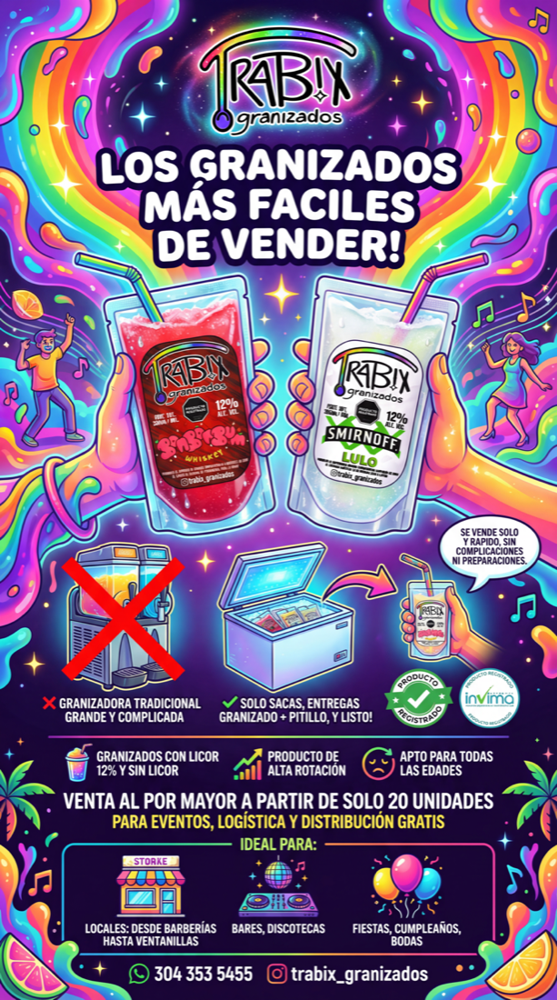

Landing principal
Una puerta de entrada clara para cada tipo de cliente.
La web principal ya no intenta venderle igual a todo el mundo. Trabix organiza su entrada en tres rutas reales: retail, high-volume y alianzas. Cada una vive en su propia pagina y lleva al canal correcto.
Visual principal
Una identidad intensa, ahora mejor organizada.


marca imposible de ignorar
compra directa
cotizacion guiada
correo para alianzas
Tres rutas
El cliente elige una sola ruta. La pagina hace el resto.
La experiencia principal funciona como selector de intencion. Cada tarjeta abre una sub-pagina con su propio mensaje, visual y CTA.
01
Retail
Para quien quiere pedir rapido, ver sabores, antojarse y escribir directo por WhatsApp.
Entrar a retail 02High-volume
Para bares, eventos, activaciones y reventa con foco en volumen, claridad comercial y cierre agil.
Entrar a volumen 03Quiero ser parte
Para propuestas, distribucion, colaboraciones o personas que quieren hacer negocio con la marca.
Entrar a alianzasUniverso Trabix
La estetica sigue siendo protagonista, pero ahora con mas direccion.
El arcoiris del logo ya no es solo decoracion. Se convierte en sistema: neon, brillo, contraste oscuro y una composicion que dirige la mirada hacia cada tipo de cliente.


Siguiente paso